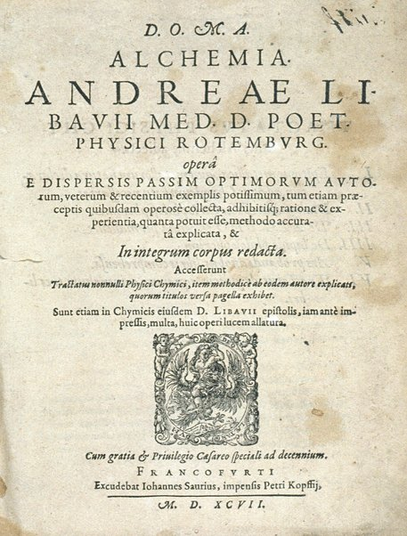
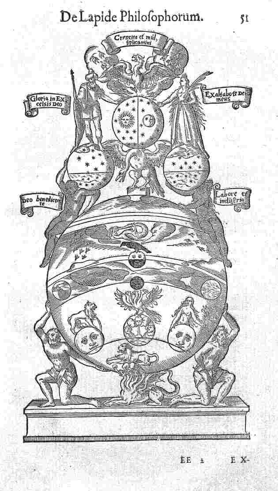
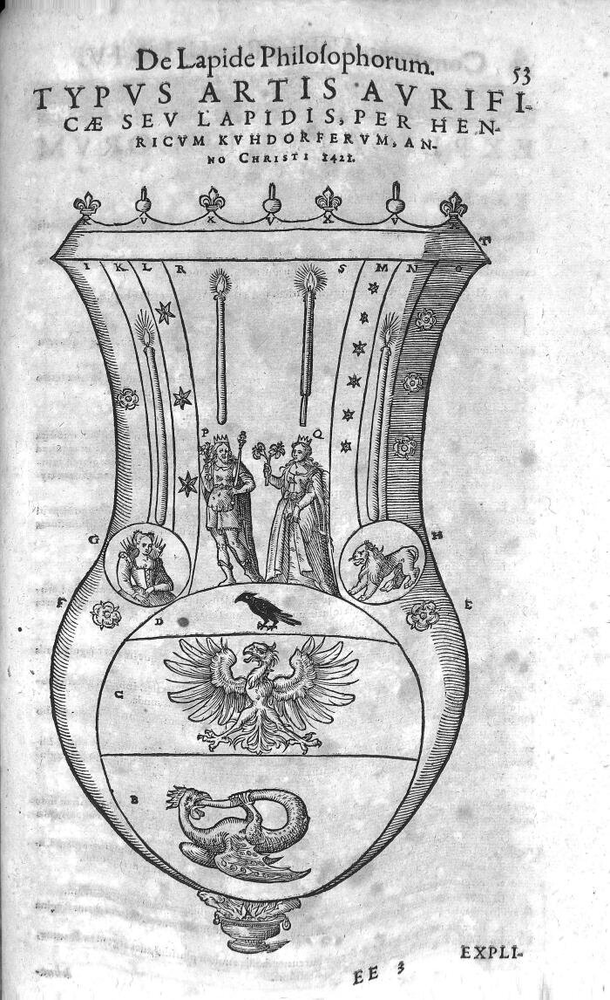
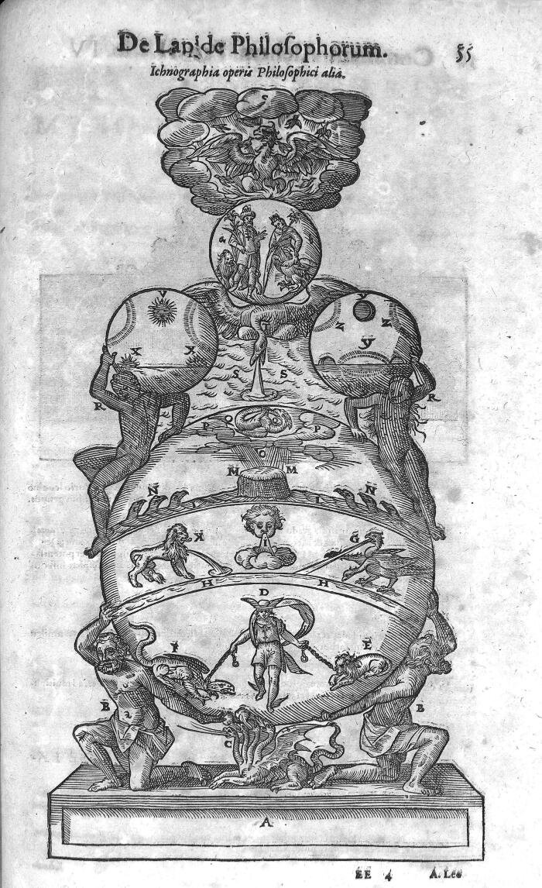
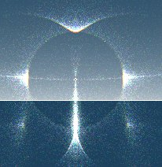
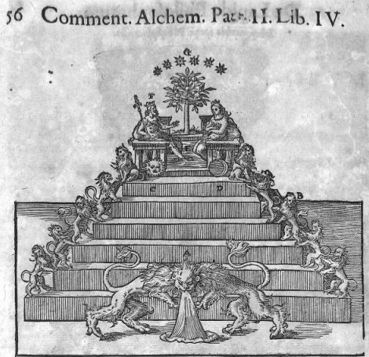

revu
le 18 octobre 2004
Plan
: quelques mots sur Libavius [extrait de John
Ferguson, Bibliotheca Chemica ; M. A. Dechambre, Dictionnaire
encyclopédique des sciences médicales] -
quatre planches commentées extraites du Tractatus
quartus De Lapide
Philosophorum - pp. 51 - 53
- 55 - 56 -
| Alchemia,
Andreae Libavii operâ e dispersis passim optimorum autorum,
veterum et recentium exemplis potissimùm tum etiam praeceptis
quibusdam operosè collecta, adhibitisque ratione et
experientiâ, quanta potuit esse, methodo accurata explicata, et
in integrum corpus redacta. Accesserunt Tractatus nonnulli Physici
Chimici, item methodicè ab eodem autore explicati... Sunt etiam
in Chymicis eiusdem Libavii epistolis, iam antè impressis,
multa, huic operi lucem allatura. / Commentationum metallicarum libri
quatuor de natura metallorum, mercurio philosophorum, azotho et lapide
seu tinctura physicorum conficienda... studio et labore Andreae
Libavii,... expositi... [Contient
: tome I : Alchemia. tome II :
Epitome metallica. / Dialogus de Mercurio philosophorum. / De azotho et
aqua permanente. / De lapide philosophorum. / Ars probandi duobus
libros comprehensa. / Tractatus de iudicio aquarum mineralium]. Petri
Kopffij (Frankfurt), 1597 |

frontispice de l'Alchemia de Libavius, 1597
John Ferguson,
Bibliotheca Chemica : Libavius was born at Halle in Saxony in
1540, and graduated doctor of medicine. In 1588 he became professor of
history and poetry at Jena, in 1591 be was a teacher in the gymnasium
and town physician at Rotenburg o/T, and on 20 March, 1607, director of
the gymnasium at Coburg, where he died 35 July, 1616. Though an
enthusiastic chemist and author of numerous works he was not a blind
follower of Paracelsus, but of moderate and independent views, and carried on
controversies both with the Paracelsisis and Galenists as Amwald,
Erastus, Gramannus, Guibertus, Riolanus, Scheunemannus, and the Paris
school. He was among the first to describe chemical actions in plain
language, and he has the credit ascribed to him of writing the first
real text-book. He attempted the analysis of mineral waters, and
described several substances which he discovered.
Libavius fut un des plus illustres chimistes allemands de la fin du seizième siècle, né à Halle, dans la Saxe, vers l'année 1546, mort à Cobourg, en 1616, après avoir été successivement professeur d'histoire et de poésie à léna (1588), gymnasiarque et médecin pensionné à Rotenbourg (1591), directeur du gymnase de Gobourg (1606). Libavius fut un grand homme dans toute l'acception du mot. En face des erreurs grossières des partisans de Paracelse, en face de la tyrannie des galénistes, il eut le courage de combattre Amwald, Gramann, Michelius, Scheunemann, Crell, Hartmann, etc., lesquels ne sachant pas appliquer à propos les données fournies par la chimie, détournaient cette belle science de sa véritable voie, et commettaient en son nom de déplorables abus. Sans doute Libavius ne sut pas secouer complètement le joug de son temps; sans doute il crut à la transmutabilité des métaux, à l'or potable et à d'autres billevesées de cette espèce, mais il a le mérite incontestable de s'être affranchi du langage obscur et mystique des alchimistes, d'avoir, le premier, publié un manuel de chimie générale, plus clair, plus utile qu'aucun de ceux qui avaient vu le jour jusqu'alors, et de tenter avec succès l'application de la chimie à l'industrie et aux. arts. C'est lui qui a reconnu la propriété qu'a l'oxyde d'or de colorer le verre en rouge [cf. voie humide et pourpre de Cassius] ; c'est lui qui a découvert le chlorure d'étain, connu pendant si longtemps sous le nom de liqueur fumante de Libavius [autrefois appelé muriate sur-oxygéné d'étain, cf. Cuvier]. C'est encore Libavius qui le premier a songé à la transfusion du sang comme un moyen de guérison et de rajeunissement. Le passage d'un de ses livres où cette idée est émise, est trop curieux, pour ne pas être traduit ici :
« Supposons un homme fort, robuste, sain, plein d'un sang généreux, et un autre homme épuisé, faible, amaigri, ayant à peine le souffle. Que le maître de l'art se munisse de deux tubes d'argent disposés de manière à pouvoir se visser l'un à l'autre. Chez l'homme robuste il ouvre une artère dans laquelle il insère l'extrémité de l'un des tubes ; puis, chez l'homme malade il ouvre pareillement une artère, qu'il munit aussi de l'autre tube; en réunissant bout à bout ces deux tubes, le sang chaud de l'homme sain passera dans le corps de l'homme affaibli, y fera pénétrer les sources de la vie, et dissipera la langueur. »
On dit que l'idée lui en serait venue, par association d'esprit avec la fable du rajeunissement d'Eson. Il est impossible d'être plus clair, et nul doute que les partisans malheureux de la transfusion, Christophe Wren, Timothée Clarke, Robert Boyle, Henshaw, Richard Lower, J.-D. Major, Denis, Emmeretz, etc., ne prirent dans les œuvres du chimiste allemand cette méthode qui provoqua tant d'enthousiasme et qui devait sombrer dans une mer d'orages et de tempêtes. André Libavius a écrit énormément. Voici les titres de ses ouvrages qui sont les plus recherchés, et qui ont le mieux établi sa célébrité [le traité où sont contenues les gravures est souligne ; il s'agit du n° VI] :
— I. Epistola de examine panacaes Amwaldinae, ut quisque judicare possit qua arte Amwalchis usvs sit. Francof-, 1594, in-8°.
— II. Seo paracelsica, m quibus vêtus medicina defenditur adversus teretismata tum G. Amwald, cujus liber de panacea excutitur, tum J. Gramanni, servatâ verâ verae chimiae laude. Francof., 1594, in-8°.
—III. Tractatus duo physici, prior de imposturâ vulnerum per unguentum armarium. curatione, posterior de cruentatione cadaverum injustâ caede factorum, praesente qui occiddisse creditur. Francof., 1594, in-8°.
— IV. Rerum chymicarum epistolica forma ad philosophas et medicos scriptarum. Francof., 1595-1599, in-8°.
—V. Alchymia è dispersis passim optimorum auctorum, veterum et recentiorum, exemplis potissimum, etc. Francof., 1595, in-fol.
— VI. Commentationum metallicarum Libri IV, de naturâ metallorum, mercurio philosophorum, azotho, et lapide seu tinctorâ physicorum conficiendâ, è rerum naturâ, experientiâ, et autorum praestantium fide. Francof., 1597, in-4°.
— VII. Alchymia recognita, emendata, et aucta, etc. Francof., 1597, in-4°.
— VIII. Epitome metallica, cum variis tractatibus, nempe, de arte probandâ mineraliâ, de aqua permanente, de aquis mineralibus. Francof., 1597, in-4°.
— IX. Novus de medicinâ veterum, tam Hippocraticâ quam hermeticâ Tractatus. Francof., 1599, in-4°.
— X. Examen censurae scholae Parisiensis contra alchymiam. Francof., 1601, in-8°.
— XI. Praxis alchymiae, etc. Francof., 1605, in-8°.
— XII. Appendix neccessaria syntagmatis arcanorum chymicorum. Francof., 1615, in-fol. (C'est dans ce dernier ouvrage que se trouve le passage sur la transfusion que nous avons rapporté plus haut.)
— XIII. Historia Bombycum, Francof., 1599, in-8°.
[Dictionnaire encyclopédique des sciences médicales. Deuxième série. Tome deuxième, Lar-Loc / publ. sous la dir. de M. A. Dechambre, Paris, Victor Masson, P. Asselin, 1869] A. C.
Les gravures que nous souhaitons étudier dans cette courte section sont tirées de l'édition 1606 du D. O. M. A. Alchymia Andreae Libavii, recognita, emendata et aucta... : tum Commentario medico physico chymico... [Francofurti : excudebat Ioannes Saurius : impensis Petri Kopffij, 1506 [i.e.1606]]. Elles font partie de la troisième partie de cet ouvrage qui s'étend sur 842 pages : Commentariorum Alchemiae Andreae Libavii, Pars Secunda. On les trouve pp. 49-56 accompagnées d'explicatio locorum. Voyons la première planche, p. 51.
I. PLANCHE I
Elle se présente comme une introduction ou une sorte de portique, préludant à la magnifique planche de la p. 55 dont elle constitue comme le premier acte ou la pars muta, les acteurs restant encore dans l'ombre. Voici l'Explicatio locorum [p. 50] :
Libavius fut un des plus illustres chimistes allemands de la fin du seizième siècle, né à Halle, dans la Saxe, vers l'année 1546, mort à Cobourg, en 1616, après avoir été successivement professeur d'histoire et de poésie à léna (1588), gymnasiarque et médecin pensionné à Rotenbourg (1591), directeur du gymnase de Gobourg (1606). Libavius fut un grand homme dans toute l'acception du mot. En face des erreurs grossières des partisans de Paracelse, en face de la tyrannie des galénistes, il eut le courage de combattre Amwald, Gramann, Michelius, Scheunemann, Crell, Hartmann, etc., lesquels ne sachant pas appliquer à propos les données fournies par la chimie, détournaient cette belle science de sa véritable voie, et commettaient en son nom de déplorables abus. Sans doute Libavius ne sut pas secouer complètement le joug de son temps; sans doute il crut à la transmutabilité des métaux, à l'or potable et à d'autres billevesées de cette espèce, mais il a le mérite incontestable de s'être affranchi du langage obscur et mystique des alchimistes, d'avoir, le premier, publié un manuel de chimie générale, plus clair, plus utile qu'aucun de ceux qui avaient vu le jour jusqu'alors, et de tenter avec succès l'application de la chimie à l'industrie et aux. arts. C'est lui qui a reconnu la propriété qu'a l'oxyde d'or de colorer le verre en rouge [cf. voie humide et pourpre de Cassius] ; c'est lui qui a découvert le chlorure d'étain, connu pendant si longtemps sous le nom de liqueur fumante de Libavius [autrefois appelé muriate sur-oxygéné d'étain, cf. Cuvier]. C'est encore Libavius qui le premier a songé à la transfusion du sang comme un moyen de guérison et de rajeunissement. Le passage d'un de ses livres où cette idée est émise, est trop curieux, pour ne pas être traduit ici :
« Supposons un homme fort, robuste, sain, plein d'un sang généreux, et un autre homme épuisé, faible, amaigri, ayant à peine le souffle. Que le maître de l'art se munisse de deux tubes d'argent disposés de manière à pouvoir se visser l'un à l'autre. Chez l'homme robuste il ouvre une artère dans laquelle il insère l'extrémité de l'un des tubes ; puis, chez l'homme malade il ouvre pareillement une artère, qu'il munit aussi de l'autre tube; en réunissant bout à bout ces deux tubes, le sang chaud de l'homme sain passera dans le corps de l'homme affaibli, y fera pénétrer les sources de la vie, et dissipera la langueur. »
On dit que l'idée lui en serait venue, par association d'esprit avec la fable du rajeunissement d'Eson. Il est impossible d'être plus clair, et nul doute que les partisans malheureux de la transfusion, Christophe Wren, Timothée Clarke, Robert Boyle, Henshaw, Richard Lower, J.-D. Major, Denis, Emmeretz, etc., ne prirent dans les œuvres du chimiste allemand cette méthode qui provoqua tant d'enthousiasme et qui devait sombrer dans une mer d'orages et de tempêtes. André Libavius a écrit énormément. Voici les titres de ses ouvrages qui sont les plus recherchés, et qui ont le mieux établi sa célébrité [le traité où sont contenues les gravures est souligne ; il s'agit du n° VI] :
— I. Epistola de examine panacaes Amwaldinae, ut quisque judicare possit qua arte Amwalchis usvs sit. Francof-, 1594, in-8°.
— II. Seo paracelsica, m quibus vêtus medicina defenditur adversus teretismata tum G. Amwald, cujus liber de panacea excutitur, tum J. Gramanni, servatâ verâ verae chimiae laude. Francof., 1594, in-8°.
—III. Tractatus duo physici, prior de imposturâ vulnerum per unguentum armarium. curatione, posterior de cruentatione cadaverum injustâ caede factorum, praesente qui occiddisse creditur. Francof., 1594, in-8°.
— IV. Rerum chymicarum epistolica forma ad philosophas et medicos scriptarum. Francof., 1595-1599, in-8°.
—V. Alchymia è dispersis passim optimorum auctorum, veterum et recentiorum, exemplis potissimum, etc. Francof., 1595, in-fol.
— VI. Commentationum metallicarum Libri IV, de naturâ metallorum, mercurio philosophorum, azotho, et lapide seu tinctorâ physicorum conficiendâ, è rerum naturâ, experientiâ, et autorum praestantium fide. Francof., 1597, in-4°.
— VII. Alchymia recognita, emendata, et aucta, etc. Francof., 1597, in-4°.
— VIII. Epitome metallica, cum variis tractatibus, nempe, de arte probandâ mineraliâ, de aqua permanente, de aquis mineralibus. Francof., 1597, in-4°.
— IX. Novus de medicinâ veterum, tam Hippocraticâ quam hermeticâ Tractatus. Francof., 1599, in-4°.
— X. Examen censurae scholae Parisiensis contra alchymiam. Francof., 1601, in-8°.
— XI. Praxis alchymiae, etc. Francof., 1605, in-8°.
— XII. Appendix neccessaria syntagmatis arcanorum chymicorum. Francof., 1615, in-fol. (C'est dans ce dernier ouvrage que se trouve le passage sur la transfusion que nous avons rapporté plus haut.)
— XIII. Historia Bombycum, Francof., 1599, in-8°.
[Dictionnaire encyclopédique des sciences médicales. Deuxième série. Tome deuxième, Lar-Loc / publ. sous la dir. de M. A. Dechambre, Paris, Victor Masson, P. Asselin, 1869] A. C.
Les gravures que nous souhaitons étudier dans cette courte section sont tirées de l'édition 1606 du D. O. M. A. Alchymia Andreae Libavii, recognita, emendata et aucta... : tum Commentario medico physico chymico... [Francofurti : excudebat Ioannes Saurius : impensis Petri Kopffij, 1506 [i.e.1606]]. Elles font partie de la troisième partie de cet ouvrage qui s'étend sur 842 pages : Commentariorum Alchemiae Andreae Libavii, Pars Secunda. On les trouve pp. 49-56 accompagnées d'explicatio locorum. Voyons la première planche, p. 51.
I. PLANCHE I

Tractatus quartus De Lapide
Philosophorum, p. 51 [cliquez sur la zone que vous
souhaitez
étudier - reculez d'une page pour revenir sur la zone de l'image
qui vient d'être visualisée]
Elle se présente comme une introduction ou une sorte de portique, préludant à la magnifique planche de la p. 55 dont elle constitue comme le premier acte ou la pars muta, les acteurs restant encore dans l'ombre. Voici l'Explicatio locorum [p. 50] :
LAPIDIS
- Le corps : dans cette première opération, il est question du cuivre [autrement dit le laiton ou airain des Sages] qui émerge de la mer mercurielle. C'est la surrection de Délos.
- L'âme : le lait de Vierge est l'eau vive qui permet d'obtenir la coagulation du corps par l'action du feu secret. La rosée permet de laver Latone ; on la nomme Azoth ou eau Élément.
- L'esprit : il est formé de l'eau vive dépurée, obtenue à partir de la première coagulation (dans la seconde opération). Alors, émerge la tête de corbeau [caput corui] qui symbolise la solution ou putréfaction. Il est ensuite question de la chaux et du verre blanc qui forme l'élixir, qui en même temps, est l'arsenic ou huile [il doit s'agir ici de l'arsenic rouge encore nommé Zandarith - sandarakh - dans des texte anciens comme ceux d'Artephius ou la Turba]. L'auteur termine en assurant que l'opération de la fermentation doit être réitérée.
commentaires de la figure p. 51
a. dragon à quatre têtes, identique à celui de la figure p. 55. On peut y voir le feu de l'enfer, mais non point de celui de l'Hadès ; il s'agit de celui de Ploutos. Si ce feu a un côté destructeur où l'on voit poindre Typhon - Python [draco - serpens], il a un côté minéralisateur où gît le grand secret de l'alchimie.
b. lion sommeillant, avant l'attaque de Vulcain ardent. Il s'agit du triomphe de la vérité, dont le sceau est la simplicité. Revoyez ici l'homme - lion du château du Plessis-Bourré. On lui trouve des affinités profondes avec la figure du dragon et il joue, par son bouclier, un rôle protecteur contre les influences extérieures, expliquant d'ailleurs, selon Fulcanelli, la présence de ce médaillon du chevalier protégeant l'athanor, au portail central de Notre-Dame et qui ne doit rien au symbolisme de la série des Vices et Vertus, cf. Gobineau.
c. l'arc de sphère supérieur permet de retrouver les principaux protagonistes de l'oeuvre ; à gauche, le lion, relié au
 . Il s'agit d'une relation au triangle de
feu
. Il s'agit d'une relation au triangle de
feu  des Chaldéens.
des Chaldéens.d. À droite, la
 avec un personnage qui doit être une Vierge ; elle tient une
fleur en forme d'étoile avec des pétales à cinq
branches. Dernière occasion pour nous de rappeler ces paroles de
Fulcanelli : « à
sept reprises, c'est l'étoile ou la fleur qui se présente
à l'Artiste... ».
avec un personnage qui doit être une Vierge ; elle tient une
fleur en forme d'étoile avec des pétales à cinq
branches. Dernière occasion pour nous de rappeler ces paroles de
Fulcanelli : « à
sept reprises, c'est l'étoile ou la fleur qui se présente
à l'Artiste... ».e. Au centre, un oiseau fabuleux qui tient de l'hydre et du phénix. Les Taoïstes signalent le phénix comme l'oiseau du cinabre, c'est-à-dire comme généré du cambar [kinnabariV] d'Artephius et de la Turba. Cet oiseau a trois têtes serpentines qui désignent nos principes : SAL
 ; SULPHUR
; SULPHUR  ; MERCURIUS
; MERCURIUS  . Notons toutefois que ces principes se
réduisent en fait à deux puisque le Mercure n'agit que
comme tiers-agent : il sert uniquement à mettre en forme «
principiée » et .
Cf. Livre secret d'Artephius.
. Notons toutefois que ces principes se
réduisent en fait à deux puisque le Mercure n'agit que
comme tiers-agent : il sert uniquement à mettre en forme «
principiée » et .
Cf. Livre secret d'Artephius.f. le principe VENT. Il s'agit du médiateur externe du Mercure ; par là il faut comprendre que les vents de l'oeuvre, qui sont au nombre de quatre, dirigent la barque du Soufre - le bateau Argos ou l'arche de Noé - en sorte de s'orienter d'abord vers le Septentrion - l'AIMANT, cf. Matière - avant que le vent d'ouest n'apporte de l'humidité albifiante au mélange des Sages. Quoi qu'il en soit, la présence du vent - anemoV - exprime bien cette phase d'instabilité, d'inconstance, qui caractérise la première phase de l'oeuvre : la nigredo
 .
.g. Il s'agit là du portique au 1er oeuvre ou putrefactio. L'air
 et l'eau
et l'eau  ,
annonçant le ciel firmamental de Philalèthe
sont l'objet de l'arc supérieur.
,
annonçant le ciel firmamental de Philalèthe
sont l'objet de l'arc supérieur.h. Le
émerge de la nigredo : c'est l'Aurora consurgens. Un corbeau,
juché sur le , annonce cette aurore en ce que le Caput corui est le signe avant coureur de la
conjonction des principes.i. serpent Ouroboros ou EN TO PAN. Cf. Berthelot, Introduction à la chimie des Anciens et Origines de l'Alchimie. Chez Jung, le serpent est le milieu entre le Christ et le Diable et il constitue le nadir ou pôle austral dans sa construction de l'ouroboros psychique [l'anthropos - rotundum forme le pôle boréal], cf. Aïon, § 391, structure et dynamique du Soi, trad. albin Michel. Retenons cette remarque de Jung :
« Ce serpent habite l'intérieur de la terre et il est le pneuma qui demeure caché dans la pierre. » [d'après Berthelot, Alch. grecs, III, vi, 5, pp. 121-130, cité in Aïon, § 386]
Le serpent est pris comme dragon babylonien. Cf. en recherche.
j. L'arc de sphère est divisé en trois parties. Au centre, nous venons de voir le serpent. Nous voyons à gauche une terre sur laquelle des oiseaux descendent. Vision de la prochaine réincrudation [Jung : individuation].
k. À droite, la sublimation avec des oiseaux en plein ciel et l'aqua permanens entretenue par le Lac Virginis qui sourd d'une grosse roche.
l. m. l'Ethiopien et l'Ethiopienne de la planche 55. L'un supporte la sphère du
tandis que l'autre supporte la sphère de la .n. o. les sphères du couple alchimique, sous forme d'eau étoilée métallique, telles qu'elles apparaissent, à très peu près, dans les aquarelles du Donum Dei. A partir de ces mandalas cosmiques, l'Artiste va s'efforcer de produire des corps glorieux : le spiritus corruptus obtenu de la dissolution des matières, tout au début de l'oeuvre, doit séjourner dans le ciel firmamental - il s'agit de la sublimation philosophique - avant que d'être réincrudé. La réincarnation de l'anima sous une forme dépurée constitue la réincrudation. C'est dans Jung [Mysterium conjunctionis, I, § 313, les personnifications des opposés, Sal] que l'on trouve l'un des résumés les plus précis de cette phase de glorification de la matière [à propos du « très beau verre cristallin » et de citations fort intéressantes de Vigenère qui mettent bien en lumière la connexion entre le SAL
et le SULPHUR ]. C'est dans cette
relation que doit être recherchée le rapport entre le
métal, le minéral et l'étoile. Nous avons vu supra
que la fleur à cinq pétales que tient la Vierge, cf. note
d, prend dans ce contexte une importance
spéciale compte tenu qu'elle est d'essence ou de vertu
et qu'elle fait partie de l'arc , dans la sphère
supportée par les Atlas. Cette fleur donc, ou cette
étoile, est le symbole du microcosme humain ; elle s'apparente
à l'étoile flamboyante du baron Tschudy [sa conception étant
évidemment bien antérieure aux écrits de Tschudy]
: il faut y deviner la manifestation centrale, i.e. saline, de la
lumière ou du . Par là se manifeste la
substance iédétique de  qui représente a
et w
de l'oeuvre, cf. notre monade, in Aurora
consurgens, II. Sous l'influence de l'étoile polaire ou
AIMANT des Sages, la substance centrique se dépure et se
concentre jusqu'au moment de la surrection de Délos. Il y a
d'autres étoiles dans l'oeuvre - cf. zodiaque alchimique - dont on
trouve les traces dans l'Atalanta fugiens [Michel Maier]. Celles qui
permettent aux argonautes de se retrouver dans le labyrinthe de la Mer
et des écueils sont : Aldébaran [cf. Atalanta
XXXVIII pour le sens hermétique] ; Regulus [Cor Leonis, ce qui est tout un
programme, cf. Atalanta XLIV]
; Antarès [rubis du
Scorpion, cf. zodiaque alchimique,
cf. Antarès
et la Rivière Sombre] ; enfin Fomalhaut [Poisson austral, gardienne du Sud :
fom-al-hoût ou bouche de poisson.
qui représente a
et w
de l'oeuvre, cf. notre monade, in Aurora
consurgens, II. Sous l'influence de l'étoile polaire ou
AIMANT des Sages, la substance centrique se dépure et se
concentre jusqu'au moment de la surrection de Délos. Il y a
d'autres étoiles dans l'oeuvre - cf. zodiaque alchimique - dont on
trouve les traces dans l'Atalanta fugiens [Michel Maier]. Celles qui
permettent aux argonautes de se retrouver dans le labyrinthe de la Mer
et des écueils sont : Aldébaran [cf. Atalanta
XXXVIII pour le sens hermétique] ; Regulus [Cor Leonis, ce qui est tout un
programme, cf. Atalanta XLIV]
; Antarès [rubis du
Scorpion, cf. zodiaque alchimique,
cf. Antarès
et la Rivière Sombre] ; enfin Fomalhaut [Poisson austral, gardienne du Sud :
fom-al-hoût ou bouche de poisson.  trouve
son exaltation dans le signe des Poissons, selon les Chaldéens.
Cf. les rapports complexes avec le mythe de Dercéto-Atargatis in
Aurora consurgens III et Jung, Aïon, § 174, la signification historique du poisson].
Nous ne pouvons dans le cadre de ce travail aller plus avant dans
l'étude hermétique des étoiles, cf. zodiaque alchimique.
trouve
son exaltation dans le signe des Poissons, selon les Chaldéens.
Cf. les rapports complexes avec le mythe de Dercéto-Atargatis in
Aurora consurgens III et Jung, Aïon, § 174, la signification historique du poisson].
Nous ne pouvons dans le cadre de ce travail aller plus avant dans
l'étude hermétique des étoiles, cf. zodiaque alchimique.p. le cygne supporte le poids du couple {
,
}. Allusion aux enfants de Léda, nés d'un
oeuf : nous pouvons faire la transition avec les enfants de Latone,
nés de l'oeuf hermétique [Diane puis Apollon]. Nous
pouvons ajouter plusieurs éléments à ce que nous
avons déjà dit sur le cygne [kuknoV].
Il se ressent d'un double symbolisme, à la fois solaire et
lunaire ; mais avant tout, il s'agit de l'arcane mercuriel . Il est donc avant tout androgyne et, comme tel,
chargé des mystères sacrés. Si l'on devait trouver
l'idéogramme résumant les traits du cygne, il faudrait
qu'il combinât le Ciel et la Terre  . Nous voyons se présenter de nouveau
l'hexagramme de Salomon... Faut-il ajouter que, par cabale, le chant du
cygne n'est autre que sa plume ? On reverra ici l'un des caissons [n°5
de la série 7] du château de
Dampierre-sur-Boutonne. Terminons en rappelant qu'on a fait du cygne un
symbole de la Prudence ; Fulcanelli y
voit, sur les médaillons des Vices et des Vertus, au portail
central de Notre-Dame, le symbole du Mercure
philosophique. Voir enfin note T sur Basile
Valentin.
. Nous voyons se présenter de nouveau
l'hexagramme de Salomon... Faut-il ajouter que, par cabale, le chant du
cygne n'est autre que sa plume ? On reverra ici l'un des caissons [n°5
de la série 7] du château de
Dampierre-sur-Boutonne. Terminons en rappelant qu'on a fait du cygne un
symbole de la Prudence ; Fulcanelli y
voit, sur les médaillons des Vices et des Vertus, au portail
central de Notre-Dame, le symbole du Mercure
philosophique. Voir enfin note T sur Basile
Valentin.q. L'oeuf philosophal bipartite où
et sont destinés à être
transformés en principes principiés. Cf. notes a, b.r. s. Le roi tient son sceptre tandis que la Vierge tient un épi de blé.
t. le phénix. Cf. note c. Par cabale, on peut dire que le phénix, qui renaît de ses cendres, est pareil au
levant, dont les reflets, à
l'aurore, viennent se baigner dans les eaux du Nil, c'est-à-dire
dans les yeux de l'aigle royal. Le phénix se consume et
renaît comme la substance arcane dont est fait Mercure et le
Soufre. Tout tient donc dans ce seul mot : AZOTH. Cf. note O.II. PLANCHE II

Tractatus
quartus De Lapide
Philosophorum, p. 53 [cliquez sur la zone que vous
souhaitez
étudier - reculez d'une page pour revenir sur la zone de l'image
qui vient d'être visualisée]
commentaires de la
figure p. 53 - Dans une explicatio locorum
signatorum. (explication des figures
marquées par des lettres), Libavius donne l'« explication
» suivante de cette gravure :
a.
principe igné - b. dragon ou serpent Ouroboros
se mordant la queue, principe archaïque de l'oeuvre et moteur du
feu secret symbolisé par la digamma  - c. aigle royal ou sublimations. Sa
fonction intervient dans le processus d'albification - d.
corbeau de l'oeuvre : ce n'est pas tant la dissolution que sa fin qui
est annoncée par le corbeau noir, cf. l'expression tête de
corbeau. L'ensemble {b, c, c} forme une bulle germinative que l'on peut
comparer à celle de l'Arbre philosophique, cf. Aurora consurgens, I. - e. rose rouge [correspond
au Soufre rouge sublimé ou sulphur ] - f. rose
blanche [correspond au Soufre
blanc ou SEL ] - g. Virgo
paritura [dans la sphère de
la Lune ; il ne s'agit pas ici du principe SEL ou
mais de
- c. aigle royal ou sublimations. Sa
fonction intervient dans le processus d'albification - d.
corbeau de l'oeuvre : ce n'est pas tant la dissolution que sa fin qui
est annoncée par le corbeau noir, cf. l'expression tête de
corbeau. L'ensemble {b, c, c} forme une bulle germinative que l'on peut
comparer à celle de l'Arbre philosophique, cf. Aurora consurgens, I. - e. rose rouge [correspond
au Soufre rouge sublimé ou sulphur ] - f. rose
blanche [correspond au Soufre
blanc ou SEL ] - g. Virgo
paritura [dans la sphère de
la Lune ; il ne s'agit pas ici du principe SEL ou
mais de  ou lune cornée, correspondant
à l'un des états du mercurius ] - h. Lion vert
ou Leo viridis [dans la sphère du .
L'ensemble {g, h} assure croissance et multiplication au Rebis, futur
lapis - i. rose rouge dans la sphère de la
lune - k. chandelle de la Vierge : rapport entre le
Lac virginis [Lait de Vierge d'Artephius]
et le feu secret de nature cireuse - l. trois
étoiles dans la sphère de la Lune [trois sublimations philosophiques
annonçant les ailgles] - m. six
étoiles dans la sphère de
[il s'agit des chaux
métalliques, à l'exclusion de
ou lune cornée, correspondant
à l'un des états du mercurius ] - h. Lion vert
ou Leo viridis [dans la sphère du .
L'ensemble {g, h} assure croissance et multiplication au Rebis, futur
lapis - i. rose rouge dans la sphère de la
lune - k. chandelle de la Vierge : rapport entre le
Lac virginis [Lait de Vierge d'Artephius]
et le feu secret de nature cireuse - l. trois
étoiles dans la sphère de la Lune [trois sublimations philosophiques
annonçant les ailgles] - m. six
étoiles dans la sphère de
[il s'agit des chaux
métalliques, à l'exclusion de  ] - n. chandelle
du Lion vert [symbole de sa
transformation en Lion rouge : les cierges allumés sont le signe
de la lumière de l'âme, c'est-à-dire du
métal brûlé ou ioV - spiritus
corruptus qui doit être transformé par le processus de
transmutation intérieure en anima consurgens
] - n. chandelle
du Lion vert [symbole de sa
transformation en Lion rouge : les cierges allumés sont le signe
de la lumière de l'âme, c'est-à-dire du
métal brûlé ou ioV - spiritus
corruptus qui doit être transformé par le processus de
transmutation intérieure en anima consurgens  ]. Les deux chandelles {k, n} nous
rappellent ce que dit Fulcanelli au sujet des cierges verts qui est
semblable, quant au fond, à ce qu'il écrit des Vierges
noires [cf. La
Légende des Cierges verts de Hippolyte Matabon (
Marseille, J.
]. Les deux chandelles {k, n} nous
rappellent ce que dit Fulcanelli au sujet des cierges verts qui est
semblable, quant au fond, à ce qu'il écrit des Vierges
noires [cf. La
Légende des Cierges verts de Hippolyte Matabon (
Marseille, J.
Cayer, 1889) in DM, II : légende de sainte Marthe] ; cf. aussi ce que nous disons au sujet des cierges - khrwV - dans Fontenay. Rapprochons de khrwV le mot khrion [cellule de cire des abeilles, cf. le frontispice du Summum Bonum de Fluctibus in Aurora consurgens I] et voyons enfin que khrukion n'est autre que le caducée : les deux cierges correspondent ainsi à l'équivalent de l'emblème hermétique suprême - o. trois roses blanches dans le champ du - p. le roi
tenant de la main droite un lys rouge - q. la reine
tenant un lys blanc. {p, q} forment le couple alchimique {, }
exactement tel qu'il apparaît, Clef I
des Douze Clefs
de Basile Valentin - r. candélabre
argenté - s. candélabre
rubéfié : ces deux candélabres constituent les
deux flambeaux des principes de l'oeuvre. On remarque que le
candélabre rubéfié a sa mêche qui
dépasse, témoin de l'individuation ; là-dessus
Bachelard écrit : « La
flamme est seule, naturellement seule, elle veut rester seule.
» [la Flamme d'une Chandelle, Paris,
1961] ce qui rappelle le UN
TO PAN de la Chrysopée [cf. Berthelot, Chimie des Anciens] - t. image de la couronne dorée - v.
chandelle en fruit [grenade ou roia] - x. lys argenté et doré -
- c. aigle royal ou sublimations. Sa
fonction intervient dans le processus d'albification - d.
corbeau de l'oeuvre : ce n'est pas tant la dissolution que sa fin qui
est annoncée par le corbeau noir, cf. l'expression tête de
corbeau. L'ensemble {b, c, c} forme une bulle germinative que l'on peut
comparer à celle de l'Arbre philosophique, cf. Aurora consurgens, I. - e. rose rouge [correspond
au Soufre rouge sublimé ou sulphur ] - f. rose
blanche [correspond au Soufre
blanc ou SEL ] - g. Virgo
paritura [dans la sphère de
la Lune ; il ne s'agit pas ici du principe SEL ou
mais de ou lune cornée, correspondant
à l'un des états du mercurius ] - h. Lion vert
ou Leo viridis [dans la sphère du .
L'ensemble {g, h} assure croissance et multiplication au Rebis, futur
lapis - i. rose rouge dans la sphère de la
lune - k. chandelle de la Vierge : rapport entre le
Lac virginis [Lait de Vierge d'Artephius]
et le feu secret de nature cireuse - l. trois
étoiles dans la sphère de la Lune [trois sublimations philosophiques
annonçant les ailgles] - m. six
étoiles dans la sphère de
[il s'agit des chaux
métalliques, à l'exclusion de ] - n. chandelle
du Lion vert [symbole de sa
transformation en Lion rouge : les cierges allumés sont le signe
de la lumière de l'âme, c'est-à-dire du
métal brûlé ou ioV - spiritus
corruptus qui doit être transformé par le processus de
transmutation intérieure en anima consurgens ]. Les deux chandelles {k, n} nous
rappellent ce que dit Fulcanelli au sujet des cierges verts qui est
semblable, quant au fond, à ce qu'il écrit des Vierges
noires [cf. La
Légende des Cierges verts de Hippolyte Matabon (
Marseille, J.Cayer, 1889) in DM, II : légende de sainte Marthe] ; cf. aussi ce que nous disons au sujet des cierges - khrwV - dans Fontenay. Rapprochons de khrwV le mot khrion [cellule de cire des abeilles, cf. le frontispice du Summum Bonum de Fluctibus in Aurora consurgens I] et voyons enfin que khrukion n'est autre que le caducée : les deux cierges correspondent ainsi à l'équivalent de l'emblème hermétique suprême - o. trois roses blanches dans le champ du
- p. le roi
tenant de la main droite un lys rouge - q. la reine
tenant un lys blanc. {p, q} forment le couple alchimique {, }
exactement tel qu'il apparaît, Clef I
des Douze Clefs
de Basile Valentin - r. candélabre
argenté - s. candélabre
rubéfié : ces deux candélabres constituent les
deux flambeaux des principes de l'oeuvre. On remarque que le
candélabre rubéfié a sa mêche qui
dépasse, témoin de l'individuation ; là-dessus
Bachelard écrit : « La
flamme est seule, naturellement seule, elle veut rester seule.
» [la Flamme d'une Chandelle, Paris,
1961] ce qui rappelle le UN
TO PAN de la Chrysopée [cf. Berthelot, Chimie des Anciens] - t. image de la couronne dorée - v.
chandelle en fruit [grenade ou roia] - x. lys argenté et doré -

commentaires de la
figure p. 55 - Dans une explicatio locorum
signatorum. (explication des figures
marquées par des lettres), Libavius donne l'« explication
» suivante de cette gravure :
A Piédestal ou base = la terre.
[c'est le fondement de l'Art ; ce symbole remonte à Zosime, cf. tome IV des Alchimistes grecs, Ecrits authentiques, les Belles Lettres. Le symbole de la Terre est. On le décrit encore comme un
temple monolithe. Quand on sait que le temple - templum - est avant
tout le ciel, on a déjà une bonne
appréciation de la complexité du symbolisme et des
allégories qui découlent de l'utilisation de ces symboles
pléïomorphes]
BB Deux géants ou Atlas s'agenouillant sur la base et supportant la sphère avec les mains.
[Atlas figure dans une des gravures de l'Azoth, attribué à Basile Valentin]
C Dragon à quatre têtes de l'haleine duquel la sphère prend forme. Les quatre degrés du feu : la première bouche émet une sorte d'air, la deuxième une fumée subtile, la troisième de la fumée et du feu, et la quatrième du feu pur.
[on voit plutôt une hydre dans ce dragon ; les quatre degrés évoquent les principes principiés : la fumée subtile représente le sulphur ;
la fumée et le feu ressortissent du mercurius ;
le feu pur, de même que l'air sont les éléments
d'Empédocle : et
à partir desquels on prépare l'âme
dépurée ou anima ]
D Le Mercurius avec une chaîne d'argent à laquelle deux animaux étendus sont attachés.
[observez la cape du Mercurius : elle affecte une forme lunaire
et se rapproche d'un détail analogue de l'emblème XLII appartenant à l'Atalanta
fugiens. Il s'agit donc d'un
équivalent symbolique de Diane aux cornes lunaires ]
E Le lion vert.
[Leo viridis : le Mercure. On parle aussi du Lion rouge ; souvent les Adeptes adoptent l'expression « sang du Lion vert » pour désigner la substance sulfureuse qui leur sert de teinture dans les opérations du magistère, voir en recherche]
F Dragon à une tête. — E et F désignent la même chose ; le liquide mercuriel qui est la materia prima de la pierre.
[dragon et lion ne désignent pas le même arcane. Le dragon est lié à la dissolution, la séparation et la putréfaction ; le lion se situe à une phase ultérieure de l'oeuvre, contemporaine du régime de . Le lion est lié à l'aigle
et exprime lesymbolisme complexe e la projection, cf. Aurora consurgens II]
. Le lion est lié à l'aigle
et exprime lesymbolisme complexe e la projection, cf. Aurora consurgens II]
G l'aigle d'argent à trois têtes ; deux de ces têtes dépérissent et se penchent pendant que la troisième crache de l'eau blanche ou liquide mercuriel dans la mer, marquée d'un H.
[cette image tricéphale de l'aigle est rare ; il ne semble pas que la tête en question crache un liquide mais plutôt quelque rayon lumineux : en effet, c'est le lion qui crache un liquide, à l'opposé... On est tenté de penser que l'aigle d'argent insuffle à l'eau mercurielle quelque agent de vitalité, en sorte de la rendre permanente et d'en faire le Mercure animé des Sages. L'aigle d'argent, comme l'aigle d'or ou royal, a pouvoir de darder de ses yeux, sans fléchir, les rayons des luminaires : et ]
I Image du vent, exhalant le souffle de l'esprit (spiritus) dans la mer située en dessous.
[l'aigle en G représente le feu ; le
vent .
Tout ceci, comme d'habitude, doit être compris par l'entendement,
faute de quoi rien ne sera compris : il s'agit de prendre ici la mesure
des quatre éléments qui vont contribuer à la
préparation du lapis . Sur les vents
de l'oeuvre,
cf. Atalanta fugiens et recherche]
K L'image du lion rouge, avec du sang rouge coulant de sa poitrine dans la mer, en dessous, parce qu'on doit la colorer comme si elle était vu mélangée d'argent et d'or ou de blanc et de rouge. Cette image est appliquée au corps, à l'âme et à
l'esprit par ceux qui cherchent trois (principes) au commencement déjà, ou au sang du lion et à la glu de l'aigle. Car, parce qu'ils en acceptent trois, ils ont un double Mercurius. Ceux qui acceptent deux principes n'ont qu'un Mercurius, qui provient d'un cristal ou d'un métal pas encore mûr des philosophes.
[il faut comprendre par là que le Lion génère le troisième principe intervenant dans l'aqua permanens :.
Dès lors, se forme ce que les Adeptes nomment l'eau ignée
ou le feu aqueux. Par sang du lion rouge, on doit par conséquent
entendre la viscosité ; par la glu de l'aigle, le principe de
fixation. Voilà qui semble aller à l'encontre des
écrits habituels où le lion est désigné
comme principe fixe et l'aigle comme principe mobile. On trouve cette
expression « glu de l'aigle » dans la Cassette du Petit
Paysan - Arca arcani - de Grasseus. Il faut comprendre que le lion est
le moyen qui permettra à l'aigle de se tirer de cette glu qui
l'empêche de prendre son vol. Au début du travail, l'aigle
n'a pas, en effet, la force de voler, comme en témoigne la septima figura du De Lapide Philosophorum de
Lambsprinck : l'escargot permet de comprendre l'allégorie. Mais
il s'agit aussi d'une indication sur la création du second Adam
: Adam est tiré d'un limon qui s'apparente à celui qui
naît de la jonction du sang du Lion rouge et de la glu de l'Aigle
blanc : il s'agit donc là d'une version d'Apollon, à ne
pas confondre avec la terre adamique, cf. Aureum seculum redivivum de
Mynsicht. Ajoutons à cela que selon Van Helmont :
« L'homme possède, outre l'âme sensitive, l'âme immortelle, que Van Helmont considère comme la substance unique, la substance véritable ; c'est le souffle de Dieu animant le limon qui constituait la matière terrestre du premier homme »
De là, il est facile d'établir un rapport avec le terme IAMSUPH, employé par le pseudo Basile Valentin dans sa Clef X de Philosophie. Ce limon visqueux représente le Mixte Mercure - Rebis : il s'agit du compost. Sur le limon (iluV, phloV), on voit qu'il s'agit d'un sédiment, de la lie de vin avec l'idée aussi de mouvements de reptation de serpent (illw) ; iluoV (caverne) abonde dans cette direction où et
se trouvent en lutte. Sur le plan mythologique, voyez IloV, fils de Trôs et fondateur d'Ilion
et comparez avec Pernety, Fables
Egyptiennes et Grecques, t. II. PhloV définit la forme du mercure :
matière liquide épaissie, d'où l'on tire argile,
terre glaise et mortier (dont parle Fulcanelli) ; selon les premiers
mythographes, phloV est l'arch ou matière même dont l'homme
est formé. Voyez l'Atalanta
fugiens pour des rapports de cabale avec Pélée,
époux de Thétis et père d'Achille. ]
L Un fleuve d'eau noire, comme dans le chaos, représentant la putrefactio. De lui s'élève une montagne qui est noire au pied et blanche au sommet, de telle façon qu'une source d'argent s'écoule du sommet. Car il est l'image de la première dissolution et coagulation et de la seconde dissolution qui en résulte.
[ce fleuve est l'AcelwoV, prototype du Mercure des Sages : animé d'un mouvement perpétuel et mystérieux, il est le facteur déterminant la fertilité, mais, par ses crues, à l'instar du Nil - décrites par Diodore de Sicile comme des Aigles, cf. Introïtus VI - il est aussi facteur de destruction. N'oublions pas qu'il est l'objet de l'un des Douze travaux d'Hercule : Achéloos lui dispute Déjanire, en se métamorphosant successivement en serpent puis en taureau furieux. Quand Hercule descend aux Enfers - c'est-à-dire à l'époque de la putrefactio - Méléagre (l'un des chasseurs de Calydon et vainqueur des Courètes ; il participa à l'expédition des Argonautes et son nom s'apparente à la noirceur ou nigredo par melaV ; aussi à l'action de fondre par meldw ; et au souci que l'on trouve exprimé dans tant de textes jusqu'au Trévisan et à Denis Zachaire, par meledhma. Pour la suite, cf. Fontenay. Remarquez que Déjanire (DhianeiroV) est teinté de cabale : dhiov (qui brûle, ou qui détruit en brûlant), allusion au pouvoir du feu secret et anhr (qui engendre) exprimant par là les deux aspects que nous venons d'exposer sur le Mercure. Tout cela était l'assurance d'une indication sur cette tunique de Nessus dont Déjanire fit présent à son mari, poison mortel s'il en fut... Dans ce mythe, Hercule joue le rôle du Mercure : il préfère le suicide au feu éternel. C'est ainsi que périt et c'est la deuxième sublimation radicale.
Peut-être est-ce ce qu'avait en vue Libavius en parlant de
deuxième dissolution.]
M Cette même montagne.
[émergeant de ce fleuve noir ou de cette mer noire - Pont-Euxin - il ne peut s'agir que de Délos, dont la surrection permet à Latone d'échapper à Typhon. On y distingue deux parties, l'une noire encore marquée par la nigredo et
l'autre par l'albification, marque de . On
ne saurait donc y voir le lapis en train de se former mais la bulle
germinative à l'égale de celle qu'on aperçoit dans
l'arbor vitae du Mercurius Redivivus.]
NN Les têtes des corbeaux noirs qui regardent hors de la mer.
[symbole classique de la putrefactio, le corbeau - korax -, par sa tête, semble annoncer l'imminence du paon, symbole de la conjonction]
O Pluie d'argent tombant des nuages sur le sommet de la montagne. Parfois ceci représente la nutrition et la purification du Lato par Azoch, parfois la seconde dissolution par laquelle l'élément air est extrait de la terre et de l'eau. (La terre est une forme de la montagne, l'eau, le liquide de la mer déjà mentionnée.)
[il s'agit de l'albification : la rosée de mai imprègne la matière. Cette période est marquée par l'aile de corbeau qu'on voit à la figure 14 du Rosarium philosophorum. Cette aile est la marque de la nutrition du lapis. Azoch est une variation sur l'Azoth, terme de chimie hermétique désignant le mercurius. Le mot AZOTH est dérivé de
l'hébreu - et doit correspondre au mot grec QeioV : DIEU. Pour comprendre cette
référence au divin, en relation avec le mercurius, il
faut se souvenir du panthéisme mystique des Egyptiens et relire
ce qu'en dit F. Hoefer dans son Histoire de la Chimie (deuxième
époque, §6, pp. 228-229).
est extrait de la et de » est rien moins que claire.
Peut-être serait-il plus approprié, au lieu de seconde
dissolution, de parler de seconde sublimation qui est celle du mercure.
En sorte que nous revenons à un thème connu qui est celui
de la volatilisation progressive du mercure, d'où résulte
l'empâtement progressif de l'aqua permanens. C'est l'action du
rémora dont parle Savinien Cyrano de Bergerac dans ses Etats de l'Empire de la Lune et du
Soleil, cf. symboles. On
pourrait aller plus loin et considérer que l'imbibition de par correspond au nutriment du lapis : la
rosée de mai. Le problème est que cela ne coïncide
pas avec l'époque de l'oeuvre, la nutrition du lapis intervenant
bien sûr avant la coagulation de l'aqua permanens. Il est curieux
que F. Hoefer n'ait pas cité l'Azoth du pseudo Basile Valentin, plus connu, grâce
à ses gravures, que celui de Paracelse.
PP Les nuages desquels tombent la rosée ou la pluie et le liquide nutritif.
[il s'agit du Lait de Vierge, cf. Artephius. Dans le Rosarium philosophorum, la figure 9 exprime parfaitement cette allégorie, sous le thème de la mondification. Il est d'autant plus remarquable d'y voir l'aile de corbeau que nous évoquions tout-à-l'heure. Cette aile de corbeau est donc un haut point de symbolisme puisqu'elle marque la transition entre la dissolution initiale, marquée par la ponticité du premier Mercure ou vinaigre très aigre d'Artephius et de la Turba, et la phase ultérieure, marquée par la cibatio ou nutrition du Rebis (rosée, pluie, liquide nutritif)]
Q La vision du ciel où un dragon est couché et dévore sa propre queue : c'est une image de la seconde coagulation.
[image classique du serpent - dragon Ouroboros. Ce qui est moins classique, c'est de le voir associé en un pareil lieu de l'oeuvre. À vrai dire, l'Ouroboros est le mercurius.
Dans le processus qui s'est mis en place, il faut admettre que la
matière dont est formée le Rebis baigne, dissoute et en
circulation par mouvements de convection, dans la substance mercurielle
qui est un fondant. La « cibatio » ou nutrition du
germe lapidaire est assurée par -
au sens de Cronos - assimilé à la roue du temps qui
permet à la minéralisation du germe de se produire et de
s'accroître. Cet accroissement - les textes parlent ici de
multiplication - dépend de ce Lait de Vierge que nous avons vu
en PP. Sur le plan symbolique, on
relève ainsi des interférences entre l'un des principes,
destructeur, du mercurius et l'autre
principe, fécondant, du même mercurius. Si nous reprenons
l'idéogramme du mercure, on y voit la † et le Taureau :
nous avons déjà développé ce thème
dans l'Aurora consurgens II et III ; il suffira donc de rappeler ces
lignes de Jung :
« Le transitus mithriatique correspond, en tant que thème, au portement de croix et la transformation du taureau sacrificiel, à la réapparition du Dieu chrétien devenu aliment et breuvage. » (les Racines de la Conscience, le symbole de la transsubstantation, §1., trad. Buchet Chastel, pochothèque, p. 264)]
RR Un Éthiopien et une Éthiopienne qui supportent deux sphères latérales plus élevées. Ils sont assis sur la plus grosse des sphères et représentent, par suite, la nigredo de la seconde opération dans la seconde putréfaction. [on peut y voir l'équivalent du couple alchimique dans les planches du Mutus Liber. La sphère sur laquelle ils sont assis est divisée en trois parties ; la partie basse est dévolue aux éléments du mercurius : ; la partie moyenne est l'art et la manière de
préparer le SEL des Sages - nous voulons parler ici du vinaige
antimonié, c'est-à-dire par cabale, étoilé.
Enfin, la partie la plus élevée représente la
partie sulfureuse du lapis. ]
SS Une mer d'argent pur qui représente le liquide mercuriel par l'intervention duquel les teintures sont réunies. [il s'agit de l'aqua permanens ou Mercure philosophique; il permet de conjoindre les deux extrémités du vaisseau de nature qui apparaissent dans les deux petites sphères où et
tiennent leur résidence.]
T Un cygne nageant sur la mer et dont le bec crache un liquide laiteux. Ce cygne est l'élixir blanc, la craie blanche, l'arsenic des philosophes, ce qui est commun aux deux ferments. Il doit supporter du dos et des ailes la sphère supérieure. [le cygne est l'un des oiseaux de la volière alchimique, cf. poème du phénix. L'un des ouvrages de M. Maier, le Jocus Severus, donne en frontispice les héros de cette histoire, au grand complet.

la volière hermétique du Jocus Severus
V Éclipse de soleil. [Voici l'une des deux éclipses dont parle le pseudo Lulle dans ses écrits alchimiques. Nous sommes ici à la période de nigredo,
noirceur que le couple alchimique annonçait du reste.]
XX Le soleil plongeant dans la mer, c'est-à-dire dans l'eau mercurielle, dans laquelle doit aussi couler l'élixir. Ceci conduit à la véritable éclipse de soleil, de chaque côté de laquelle il faut représenter un arc-en-ciel pour suggérer la queue du paon qui apparaît ensuite dans la coagulation. [cette image du crépuscule au couchant, accompagnée de ce double arc-en-ciel évoque irrésistiblement un phénomène météorologique qui n'est pas si rare que cela : le parhélie. Il s'agit de deux arcs colorés (souvent un seul est visible), situés de part et d'autre du soleil à son lever ou son coucher (le premier cas étant plus rare). Ces arcs, provoqués par la présence dans l'atmosphère de cristaux de glace heaxagonaux, se trouvent à 22° d'arc du soleil. Il sont parfois accompagnés d'un arc circumzénithal ou d'un pilier de lumière. Les anglo-saxons les nomment sundogs ou « chiens du soleil ». Autre occasion pour l'amoureux de science d'observer là encore des phénomènes de synchronicité entre des manifestations naturelles et les symboles. Le parhélie n'est rien d'autre qu'une forme particulière de halo. Plusieurs points sont à remarquer : la figure cristalline déterminant le parhélie est l'hexagone où l'on retrouve le symbole, entrelacé, de l'AIR et de l'EAU. Ce n'est pas tout : ce
phénomène peut s'écrire :
+ = et le FEU dont il s'agit s'entend
comme LUX, non point comme le feu destructeur de Typhon : en effet, le
parhélie survient toujours alors que le
est présent in corpore et la couleur rouge est tournée du
côté solaire, comme attestant de sa nature . Notez que l'idéogramme de Salomon ne rend pas
compte exactement du parhélie. Il faut plutôt faire
appel à ce symbole, plusieurs fois rencontré -  - que l'on trouve dans l'Aureum seculum redivivum de
Mynsicht. Il exprime l'instabilité d'une réaction «
chymique » où l'étoile asthr le dispute à la fleur anqoV.
Qaunt au halo complet - alwV - il est plus rare et traduit des
échanges complexes entre
et : ce ces inter-actions naissent de véritables
poussières cristallines qui présentent des
formes diverses. Ces formes déterminent un halo de 22°
ou un halo de 46° (grand halo). Ailleurs, nous avons des
parhélies ; ou un cercle parhélique ; ou bien un
parenthélie, image écartée de 120° du ,
qui est donc en terme chaldéen un trigone,
caractérisé par l'idéogramme . Notons encore que le parhélie est l'image
du dont il conserve la dimension. On croyait, auparavant,
que le parhélie annonçait des perturbations ou des
tempêtes. Mais pour l'alchimiste, il n'est que le signe avant
coureur de la nigredo .
- que l'on trouve dans l'Aureum seculum redivivum de
Mynsicht. Il exprime l'instabilité d'une réaction «
chymique » où l'étoile asthr le dispute à la fleur anqoV.
Qaunt au halo complet - alwV - il est plus rare et traduit des
échanges complexes entre
et : ce ces inter-actions naissent de véritables
poussières cristallines qui présentent des
formes diverses. Ces formes déterminent un halo de 22°
ou un halo de 46° (grand halo). Ailleurs, nous avons des
parhélies ; ou un cercle parhélique ; ou bien un
parenthélie, image écartée de 120° du ,
qui est donc en terme chaldéen un trigone,
caractérisé par l'idéogramme . Notons encore que le parhélie est l'image
du dont il conserve la dimension. On croyait, auparavant,
que le parhélie annonçait des perturbations ou des
tempêtes. Mais pour l'alchimiste, il n'est que le signe avant
coureur de la nigredo .
simulation d'aphélie réalisée avec HaloSim
On voit nettement, de part et d'autre du soleil, les « chiens solaires » ou sundogs. L'image présentée ici reproduit les principaux phénomènes du halo qui ne sont presque jamais réunis dans la réalité... On distingue fort bien le petit halo, l'arc de Lowitz qui réunit les deux sundogs ; l'arc de Parry encore appelé cercle circumzénithal et la colonne. Si l'on reprend la sphère de Libavius, il n'est pas douteux que l'on aperçoive non pas un double arc-en-ciel mais bien plutôt l'équivalent de parhélies. De tute façon, le parhélie présente toutes les couleurs de l'arc-en-ciel dont il constitue, en somme, une variation. L'important, au plan de la signifiance hermétique, est de réaliser plusieurs chose : 1)- nous avons dans la halo solaire complet l'image même d'un mandala naturel (cf. Jung, Commentaire au Mystère de la fleur d'or, voir Aurora consurgens et cf. Psychologie et Alchimie). Ce n'est pas tout. 2)- nous retrouvons les idéogrammes de et de . L'arc circumzénithal forme
en effet une sorte de croissant lunaire. 3)- nous retrouvons le signe
de l'ioV .
On remarque que l'aphélie se développe lorsque le
est proche de l'horizon, alors que la nigredo va survenir ; c'est
pourquoi Libavius parle d'éclipse de soleil : on peut aussi
employer le terme d'offuscation qui réalise mieux cet
état d'affaiblissement dans lequel se trouve le
à cette époque de l'oeuvre.]
YY ZZ Éclipse de lune qui a également un arc-en-ciel de chaque côté et (également) dans la partie inférieure de la mer, mer dans laquelle la lune doit plonger. Ceci est l'image de la fermentation blanche. Mais les deux mers doivent être assez sombres. La lune glisse dans la mer. [même image pour des commentaires semblables appliqués à la. Mais il faut parler ici de
parasélènes : ce phénomène est connu depuis
longtemps et a été noté par Pline qui fait mention
de trois lunes aperçues en l'an 632 de la fondation de Rome.
C'est exactement ce que Libavius donne à voir dans cette
sphère de la lune. Les habitants de localités du
Loir-et-Cher aisiq ue d'Indre-et-Loire furent témoins de
magnifiques parasélènes le 21 février 1864, vers
20h, Cf. Imago
mundi, halos et couronnes.]
a Le roi, vêtu de pourpre, avec une couronne d'or, a un lion blanc à côté de lui. Il tient un lys rouge à la main, alors que la reine en tient un blanc. [le couple alchimique : le lion est le symbole du fixe. En toute logique, il devrait être rouge car les couleurs qui lui sont consacrées sont le vert - leo viridis - ou le rouge ; la reine tient un aigle, symbole du volatil ; on sait néanmoins que seul l'aigle royal peut fixer le. Sur le
lys, cf. l'Oeuvre secret d'Hermès de
D'Espagnet]
b La reine, coiffée d'une couronne d'argent, caresse un aigle blanc ou d'argent qui se tient à côté d'elle.
c Un phénix, sur la sphère, s'incinérant lui-même ; beaucoup d'oiseaux d'or et d'argent s'envolent des cendres. C'est le signe de la multiplication et de l'augmentation. [n'y a-t-il pas là méprise ? Le phénix renaît de ses cendres... et c'est même l'emblème suprême qui témoigne de la naissance du lapis et de la surrection du]
IV. PLANCHE IV
Tractatus quartus De Lapide Philosophorum, p. 56 [cliquez sur la zone que vous souhaitez étudier - reculez d'une page pour revenir sur la zone de l'image qui vient d'être visualisée]
A Piédestal ou base = la terre.
[c'est le fondement de l'Art ; ce symbole remonte à Zosime, cf. tome IV des Alchimistes grecs, Ecrits authentiques, les Belles Lettres. Le symbole de la Terre est
. On le décrit encore comme un
temple monolithe. Quand on sait que le temple - templum - est avant
tout le ciel, on a déjà une bonne
appréciation de la complexité du symbolisme et des
allégories qui découlent de l'utilisation de ces symboles
pléïomorphes]BB Deux géants ou Atlas s'agenouillant sur la base et supportant la sphère avec les mains.
[Atlas figure dans une des gravures de l'Azoth, attribué à Basile Valentin]
C Dragon à quatre têtes de l'haleine duquel la sphère prend forme. Les quatre degrés du feu : la première bouche émet une sorte d'air, la deuxième une fumée subtile, la troisième de la fumée et du feu, et la quatrième du feu pur.
[on voit plutôt une hydre dans ce dragon ; les quatre degrés évoquent les principes principiés : la fumée subtile représente le sulphur
;
la fumée et le feu ressortissent du mercurius ;
le feu pur, de même que l'air sont les éléments
d'Empédocle : et
à partir desquels on prépare l'âme
dépurée ou anima ]D Le Mercurius avec une chaîne d'argent à laquelle deux animaux étendus sont attachés.
[observez la cape du Mercurius : elle affecte une forme lunaire
et se rapproche d'un détail analogue de l'emblème XLII appartenant à l'Atalanta
fugiens. Il s'agit donc d'un
équivalent symbolique de Diane aux cornes lunaires ]E Le lion vert.
[Leo viridis : le Mercure. On parle aussi du Lion rouge ; souvent les Adeptes adoptent l'expression « sang du Lion vert » pour désigner la substance sulfureuse qui leur sert de teinture dans les opérations du magistère, voir en recherche]
F Dragon à une tête. — E et F désignent la même chose ; le liquide mercuriel qui est la materia prima de la pierre.
[dragon et lion ne désignent pas le même arcane. Le dragon est lié à la dissolution, la séparation et la putréfaction ; le lion se situe à une phase ultérieure de l'oeuvre, contemporaine du régime de
. Le lion est lié à l'aigle
et exprime lesymbolisme complexe e la projection, cf. Aurora consurgens II]G l'aigle d'argent à trois têtes ; deux de ces têtes dépérissent et se penchent pendant que la troisième crache de l'eau blanche ou liquide mercuriel dans la mer, marquée d'un H.
[cette image tricéphale de l'aigle est rare ; il ne semble pas que la tête en question crache un liquide mais plutôt quelque rayon lumineux : en effet, c'est le lion qui crache un liquide, à l'opposé... On est tenté de penser que l'aigle d'argent insuffle à l'eau mercurielle quelque agent de vitalité, en sorte de la rendre permanente et d'en faire le Mercure animé des Sages. L'aigle d'argent, comme l'aigle d'or ou royal, a pouvoir de darder de ses yeux, sans fléchir, les rayons des luminaires :
et ]I Image du vent, exhalant le souffle de l'esprit (spiritus) dans la mer située en dessous.
[l'aigle en G représente le feu
; le
vent .
Tout ceci, comme d'habitude, doit être compris par l'entendement,
faute de quoi rien ne sera compris : il s'agit de prendre ici la mesure
des quatre éléments qui vont contribuer à la
préparation du lapis . Sur les vents
de l'oeuvre,
cf. Atalanta fugiens et recherche]K L'image du lion rouge, avec du sang rouge coulant de sa poitrine dans la mer, en dessous, parce qu'on doit la colorer comme si elle était vu mélangée d'argent et d'or ou de blanc et de rouge. Cette image est appliquée au corps, à l'âme et à
l'esprit par ceux qui cherchent trois (principes) au commencement déjà, ou au sang du lion et à la glu de l'aigle. Car, parce qu'ils en acceptent trois, ils ont un double Mercurius. Ceux qui acceptent deux principes n'ont qu'un Mercurius, qui provient d'un cristal ou d'un métal pas encore mûr des philosophes.
[il faut comprendre par là que le Lion génère le troisième principe intervenant dans l'aqua permanens :
.
Dès lors, se forme ce que les Adeptes nomment l'eau ignée
ou le feu aqueux. Par sang du lion rouge, on doit par conséquent
entendre la viscosité ; par la glu de l'aigle, le principe de
fixation. Voilà qui semble aller à l'encontre des
écrits habituels où le lion est désigné
comme principe fixe et l'aigle comme principe mobile. On trouve cette
expression « glu de l'aigle » dans la Cassette du Petit
Paysan - Arca arcani - de Grasseus. Il faut comprendre que le lion est
le moyen qui permettra à l'aigle de se tirer de cette glu qui
l'empêche de prendre son vol. Au début du travail, l'aigle
n'a pas, en effet, la force de voler, comme en témoigne la septima figura du De Lapide Philosophorum de
Lambsprinck : l'escargot permet de comprendre l'allégorie. Mais
il s'agit aussi d'une indication sur la création du second Adam
: Adam est tiré d'un limon qui s'apparente à celui qui
naît de la jonction du sang du Lion rouge et de la glu de l'Aigle
blanc : il s'agit donc là d'une version d'Apollon, à ne
pas confondre avec la terre adamique, cf. Aureum seculum redivivum de
Mynsicht. Ajoutons à cela que selon Van Helmont : « L'homme possède, outre l'âme sensitive, l'âme immortelle, que Van Helmont considère comme la substance unique, la substance véritable ; c'est le souffle de Dieu animant le limon qui constituait la matière terrestre du premier homme »
De là, il est facile d'établir un rapport avec le terme IAMSUPH, employé par le pseudo Basile Valentin dans sa Clef X de Philosophie. Ce limon visqueux représente le Mixte Mercure - Rebis : il s'agit du compost. Sur le limon (iluV, phloV), on voit qu'il s'agit d'un sédiment, de la lie de vin avec l'idée aussi de mouvements de reptation de serpent (illw) ; iluoV (caverne) abonde dans cette direction où
et
se trouvent en lutte. Sur le plan mythologique, voyez IloV, fils de Trôs et fondateur d'Ilion
et comparez avec Pernety, Fables
Egyptiennes et Grecques, t. II. PhloV définit la forme du mercure :
matière liquide épaissie, d'où l'on tire argile,
terre glaise et mortier (dont parle Fulcanelli) ; selon les premiers
mythographes, phloV est l'arch ou matière même dont l'homme
est formé. Voyez l'Atalanta
fugiens pour des rapports de cabale avec Pélée,
époux de Thétis et père d'Achille. ]L Un fleuve d'eau noire, comme dans le chaos, représentant la putrefactio. De lui s'élève une montagne qui est noire au pied et blanche au sommet, de telle façon qu'une source d'argent s'écoule du sommet. Car il est l'image de la première dissolution et coagulation et de la seconde dissolution qui en résulte.
[ce fleuve est l'AcelwoV, prototype du Mercure des Sages : animé d'un mouvement perpétuel et mystérieux, il est le facteur déterminant la fertilité, mais, par ses crues, à l'instar du Nil - décrites par Diodore de Sicile comme des Aigles, cf. Introïtus VI - il est aussi facteur de destruction. N'oublions pas qu'il est l'objet de l'un des Douze travaux d'Hercule : Achéloos lui dispute Déjanire, en se métamorphosant successivement en serpent puis en taureau furieux. Quand Hercule descend aux Enfers - c'est-à-dire à l'époque de la putrefactio - Méléagre (l'un des chasseurs de Calydon et vainqueur des Courètes ; il participa à l'expédition des Argonautes et son nom s'apparente à la noirceur ou nigredo par melaV ; aussi à l'action de fondre par meldw ; et au souci que l'on trouve exprimé dans tant de textes jusqu'au Trévisan et à Denis Zachaire, par meledhma. Pour la suite, cf. Fontenay. Remarquez que Déjanire (DhianeiroV) est teinté de cabale : dhiov (qui brûle, ou qui détruit en brûlant), allusion au pouvoir du feu secret et anhr (qui engendre) exprimant par là les deux aspects que nous venons d'exposer sur le Mercure. Tout cela était l'assurance d'une indication sur cette tunique de Nessus dont Déjanire fit présent à son mari, poison mortel s'il en fut... Dans ce mythe, Hercule joue le rôle du Mercure : il préfère le suicide au feu éternel. C'est ainsi que périt
et c'est la deuxième sublimation radicale.
Peut-être est-ce ce qu'avait en vue Libavius en parlant de
deuxième dissolution.]M Cette même montagne.
[émergeant de ce fleuve noir ou de cette mer noire - Pont-Euxin - il ne peut s'agir que de Délos, dont la surrection permet à Latone d'échapper à Typhon. On y distingue deux parties, l'une noire encore marquée par la nigredo
et
l'autre par l'albification, marque de . On
ne saurait donc y voir le lapis en train de se former mais la bulle
germinative à l'égale de celle qu'on aperçoit dans
l'arbor vitae du Mercurius Redivivus.]NN Les têtes des corbeaux noirs qui regardent hors de la mer.
[symbole classique de la putrefactio, le corbeau - korax -, par sa tête, semble annoncer l'imminence du paon, symbole de la conjonction]
O Pluie d'argent tombant des nuages sur le sommet de la montagne. Parfois ceci représente la nutrition et la purification du Lato par Azoch, parfois la seconde dissolution par laquelle l'élément air est extrait de la terre et de l'eau. (La terre est une forme de la montagne, l'eau, le liquide de la mer déjà mentionnée.)
[il s'agit de l'albification : la rosée de mai imprègne la matière. Cette période est marquée par l'aile de corbeau qu'on voit à la figure 14 du Rosarium philosophorum. Cette aile est la marque de la nutrition du lapis. Azoch est une variation sur l'Azoth, terme de chimie hermétique désignant le mercurius
. Le mot AZOTH est dérivé de
l'hébreu - et doit correspondre au mot grec QeioV : DIEU. Pour comprendre cette
référence au divin, en relation avec le mercurius, il
faut se souvenir du panthéisme mystique des Egyptiens et relire
ce qu'en dit F. Hoefer dans son Histoire de la Chimie (deuxième
époque, §6, pp. 228-229). Le panthéisme mystique des
Égyptiens repose principalement sur les nombres binaire,
ternaire et
quaternaire. a ces nombres mystiques, il faut ajouter encore les
nombres cinq, sept, le carré de trois (neuf) et le nombre
quinze, comme étant le résultat de l'addition des trois
premiers nombres impairs (3+5+7 = 15). L'autel sous forme de coupe dont
parle Zosime, dans son traité de la composition des eaux, a
quinze degrés. Et le sceau d'Hermès ou de Mercure, avec
lequel les alchimistes cachetaient les flacons contenant les substances
destinées au grand oeuvre, représente une combinaison
mystique de différents nombres (cf. Paracelse). Je ne parle pas
des sept métaux consacrés aux sept planètes, ni de
beaucoup d'autres combinaisons mystiques que l'on trouve dans les
ouvrages d'alchimie
(je dois à l'obligeance de M. Javarry la communication d'un manuscrit des ouvrages mystiques attribués à Thémistius, qui vivait du temps de l'empereur Valens. On y lit :
« les sages s'attachaient à considérer la nature des différents métaux; et ayant reconnu que ceux-ci étaient au nombre de sept, ils découvrirent de grands mystères dans ce nombre : ce qui les engagea à diviser le temps en espaces de sept jours consécutifs qu'ils appelèrent semaine (septimana), et donnèrent à chaque jour de la semaine le nom d'une des sept planètes parce que chaque métal est physiquement dominé par une de sept planètes. C'est pour ce même sujet que Moïse, philosophe hébreu, dans son allégorie de la création du monde, a appliqué les sept métaux aux sept premiers jours, à savoir les six métaux malléables aux six jours de la création, et le mercure ou argent-vif au septième jour, dont il a fait un jour de repos, pour indiquer que ce métal, n'étant ni solide ni malléable, avait besoin d'une préparation différente des autres. »
Et ailleurs, pag. 124 :
« De la propriété du nombre quatre. Il faut d'abord considérer que les quatre éléments sont sortis de la pensée de Dieu comme d'une matrice dans laquelle ils avaient été renfermés jusqu'au moment de la création. - Les sages regardent le nombre quatre comme le symbole de la nature, et comme le seul nombre qui constitue l'essence divine, en représentant ses quatre plus essentielles perfections, qui sont: son unité, sa puissance infinie, sa bonté et sa sagesse. De même que l'essence divine est désignée par le nombre 4, l'âme du monde est désignée par le nombre 36, parce que le nombre 9, qui désigne les neuf hiérarchies des anges, étant multiplié par le nombre 4 donne 36; et que dans le nombre 9 on trouve les quatre premiers impairs et les quatre premiers pairs, qui additionnés ensemble, donnent aussi le nombre 36 = (1+3+5+7) + (2+4+6+8). Remarquez encore que le nombre 4 donne (en additionnant ensemble les quatre nombres dont il se compose) le nombre 10 = 1+2+3+4. »)
D'après les idées de ce panthéisme mystique, Dieu est partout et dans tout : dans l'abstrait comme dans le concret, dans le nombre comme dans la réalité. Dieu est le commencement et la fin [...] Si dans les mystères de l'art sacré les nombres jouent un rôle important, les lettres y ont également une grande valeur. La lettre A, qui, soit fortuitement, soit par une raison quelconque, est la première des alphabets de presque toutes les langues connues, donne (étant jointe aux trois dernières lettres des alphabets latin, grec et hébreu), naissance au mot mystique AZOTH =
Les adeptes ne parlent qu'avec beaucoup de mystère de ce fameux AZOTH, qui devait être la clef de la santé et de la richesse, ces deux grands leviers de la vie de l'homme, et de l'alchimiste en particulier (Paracelse a fait un traité sur l'azoth, qui ne nous apprend pas grand'chose). [...]
(le nom d'Abraxas, par lequel on désigne des pierres précieuses sur lesquelles sont tracées des figures symboliques, serait lui-même une combinaison mystique de lettres qui, étant exprimées en chiffres, donneraient le nombre de jours dont se compose l'année)]
On voit que AZOTH est formé de la
première lettre de l'alphabet et de la dernière lettre
des trois alphabets latin, grec (o pour w) et hébreu. La
référence au nombre 15 est intéressante dans la
mesure où Fulcanelli en parle dans le Myst. Cath. lors de
l'examen d'un plafond, au château de Terre-Neuve [Fontenay-Le-Comte]. Quant à Lato, il
s'agit du laiton ou hermaphrodite qui forme, dans l'aqua permanens, la
susbtance du second Adam [voir Jung, Aïon]. Pour le reste,
la phrase de Libavius est assez obscure : «
l'élément (je dois à l'obligeance de M. Javarry la communication d'un manuscrit des ouvrages mystiques attribués à Thémistius, qui vivait du temps de l'empereur Valens. On y lit :
« les sages s'attachaient à considérer la nature des différents métaux; et ayant reconnu que ceux-ci étaient au nombre de sept, ils découvrirent de grands mystères dans ce nombre : ce qui les engagea à diviser le temps en espaces de sept jours consécutifs qu'ils appelèrent semaine (septimana), et donnèrent à chaque jour de la semaine le nom d'une des sept planètes parce que chaque métal est physiquement dominé par une de sept planètes. C'est pour ce même sujet que Moïse, philosophe hébreu, dans son allégorie de la création du monde, a appliqué les sept métaux aux sept premiers jours, à savoir les six métaux malléables aux six jours de la création, et le mercure ou argent-vif au septième jour, dont il a fait un jour de repos, pour indiquer que ce métal, n'étant ni solide ni malléable, avait besoin d'une préparation différente des autres. »
Et ailleurs, pag. 124 :
« De la propriété du nombre quatre. Il faut d'abord considérer que les quatre éléments sont sortis de la pensée de Dieu comme d'une matrice dans laquelle ils avaient été renfermés jusqu'au moment de la création. - Les sages regardent le nombre quatre comme le symbole de la nature, et comme le seul nombre qui constitue l'essence divine, en représentant ses quatre plus essentielles perfections, qui sont: son unité, sa puissance infinie, sa bonté et sa sagesse. De même que l'essence divine est désignée par le nombre 4, l'âme du monde est désignée par le nombre 36, parce que le nombre 9, qui désigne les neuf hiérarchies des anges, étant multiplié par le nombre 4 donne 36; et que dans le nombre 9 on trouve les quatre premiers impairs et les quatre premiers pairs, qui additionnés ensemble, donnent aussi le nombre 36 = (1+3+5+7) + (2+4+6+8). Remarquez encore que le nombre 4 donne (en additionnant ensemble les quatre nombres dont il se compose) le nombre 10 = 1+2+3+4. »)
D'après les idées de ce panthéisme mystique, Dieu est partout et dans tout : dans l'abstrait comme dans le concret, dans le nombre comme dans la réalité. Dieu est le commencement et la fin [...] Si dans les mystères de l'art sacré les nombres jouent un rôle important, les lettres y ont également une grande valeur. La lettre A, qui, soit fortuitement, soit par une raison quelconque, est la première des alphabets de presque toutes les langues connues, donne (étant jointe aux trois dernières lettres des alphabets latin, grec et hébreu), naissance au mot mystique AZOTH =
Z
A O
TH
A O
TH
Les adeptes ne parlent qu'avec beaucoup de mystère de ce fameux AZOTH, qui devait être la clef de la santé et de la richesse, ces deux grands leviers de la vie de l'homme, et de l'alchimiste en particulier (Paracelse a fait un traité sur l'azoth, qui ne nous apprend pas grand'chose). [...]
(le nom d'Abraxas, par lequel on désigne des pierres précieuses sur lesquelles sont tracées des figures symboliques, serait lui-même une combinaison mystique de lettres qui, étant exprimées en chiffres, donneraient le nombre de jours dont se compose l'année)]
est extrait de la et de » est rien moins que claire.
Peut-être serait-il plus approprié, au lieu de seconde
dissolution, de parler de seconde sublimation qui est celle du mercure.
En sorte que nous revenons à un thème connu qui est celui
de la volatilisation progressive du mercure, d'où résulte
l'empâtement progressif de l'aqua permanens. C'est l'action du
rémora dont parle Savinien Cyrano de Bergerac dans ses Etats de l'Empire de la Lune et du
Soleil, cf. symboles. On
pourrait aller plus loin et considérer que l'imbibition de par correspond au nutriment du lapis : la
rosée de mai. Le problème est que cela ne coïncide
pas avec l'époque de l'oeuvre, la nutrition du lapis intervenant
bien sûr avant la coagulation de l'aqua permanens. Il est curieux
que F. Hoefer n'ait pas cité l'Azoth du pseudo Basile Valentin, plus connu, grâce
à ses gravures, que celui de Paracelse.PP Les nuages desquels tombent la rosée ou la pluie et le liquide nutritif.
[il s'agit du Lait de Vierge, cf. Artephius. Dans le Rosarium philosophorum, la figure 9 exprime parfaitement cette allégorie, sous le thème de la mondification. Il est d'autant plus remarquable d'y voir l'aile de corbeau que nous évoquions tout-à-l'heure. Cette aile de corbeau est donc un haut point de symbolisme puisqu'elle marque la transition entre la dissolution initiale, marquée par la ponticité du premier Mercure ou vinaigre très aigre d'Artephius et de la Turba, et la phase ultérieure, marquée par la cibatio ou nutrition du Rebis (rosée, pluie, liquide nutritif)]
Q La vision du ciel où un dragon est couché et dévore sa propre queue : c'est une image de la seconde coagulation.
[image classique du serpent - dragon Ouroboros. Ce qui est moins classique, c'est de le voir associé en un pareil lieu de l'oeuvre. À vrai dire, l'Ouroboros est le mercurius
.
Dans le processus qui s'est mis en place, il faut admettre que la
matière dont est formée le Rebis baigne, dissoute et en
circulation par mouvements de convection, dans la substance mercurielle
qui est un fondant. La « cibatio » ou nutrition du
germe lapidaire est assurée par -
au sens de Cronos - assimilé à la roue du temps qui
permet à la minéralisation du germe de se produire et de
s'accroître. Cet accroissement - les textes parlent ici de
multiplication - dépend de ce Lait de Vierge que nous avons vu
en PP. Sur le plan symbolique, on
relève ainsi des interférences entre l'un des principes,
destructeur, du mercurius et l'autre
principe, fécondant, du même mercurius. Si nous reprenons
l'idéogramme du mercure, on y voit la † et le Taureau :
nous avons déjà développé ce thème
dans l'Aurora consurgens II et III ; il suffira donc de rappeler ces
lignes de Jung :« Le transitus mithriatique correspond, en tant que thème, au portement de croix et la transformation du taureau sacrificiel, à la réapparition du Dieu chrétien devenu aliment et breuvage. » (les Racines de la Conscience, le symbole de la transsubstantation, §1., trad. Buchet Chastel, pochothèque, p. 264)]
RR Un Éthiopien et une Éthiopienne qui supportent deux sphères latérales plus élevées. Ils sont assis sur la plus grosse des sphères et représentent, par suite, la nigredo de la seconde opération dans la seconde putréfaction. [on peut y voir l'équivalent du couple alchimique dans les planches du Mutus Liber. La sphère sur laquelle ils sont assis est divisée en trois parties ; la partie basse est dévolue aux éléments du mercurius :
; la partie moyenne est l'art et la manière de
préparer le SEL des Sages - nous voulons parler ici du vinaige
antimonié, c'est-à-dire par cabale, étoilé.
Enfin, la partie la plus élevée représente la
partie sulfureuse du lapis. ]SS Une mer d'argent pur qui représente le liquide mercuriel par l'intervention duquel les teintures sont réunies. [il s'agit de l'aqua permanens ou Mercure philosophique; il permet de conjoindre les deux extrémités du vaisseau de nature qui apparaissent dans les deux petites sphères où
et
tiennent leur résidence.]T Un cygne nageant sur la mer et dont le bec crache un liquide laiteux. Ce cygne est l'élixir blanc, la craie blanche, l'arsenic des philosophes, ce qui est commun aux deux ferments. Il doit supporter du dos et des ailes la sphère supérieure. [le cygne est l'un des oiseaux de la volière alchimique, cf. poème du phénix. L'un des ouvrages de M. Maier, le Jocus Severus, donne en frontispice les héros de cette histoire, au grand complet.
la volière hermétique du Jocus Severus
Le
cygne est l'un des symboles du dissolvant ou mercurius . Basile Valentin ne dit-il
pas que le « cygne rôti sera pour la table du roy » ?
En langage alchimique, rôtir le cygne, c'est coaguler le Mercure,
c'est-à-dire obtenir sa sublimation : l'Esprit se retire,
laissant le Corps allié à l'Âme en un cristal
brillant de mille feux : l'Artiste peut contempler le rayon igné
solaire qu'il a réussi à prendre dans les rets de son
filet cosmique par l'entremise de Diane  aux cornes lunaires.
Voyez encore les Douze
Clefs de Basile qui nous dit qu'il faut donner à manger un
cygne blanc à l'homme double igné, cf. Clef VI. Comparez
avec le caisson n°5 de la série 7 que Fulcanelli examine, au
tome II des Demeures
philosophales, où l'on voit un cygne transpercé
par une flèche où un phylactère indique : «
je meurs par mes propres plumes »]
aux cornes lunaires.
Voyez encore les Douze
Clefs de Basile qui nous dit qu'il faut donner à manger un
cygne blanc à l'homme double igné, cf. Clef VI. Comparez
avec le caisson n°5 de la série 7 que Fulcanelli examine, au
tome II des Demeures
philosophales, où l'on voit un cygne transpercé
par une flèche où un phylactère indique : «
je meurs par mes propres plumes »]
. Basile Valentin ne dit-il
pas que le « cygne rôti sera pour la table du roy » ?
En langage alchimique, rôtir le cygne, c'est coaguler le Mercure,
c'est-à-dire obtenir sa sublimation : l'Esprit se retire,
laissant le Corps allié à l'Âme en un cristal
brillant de mille feux : l'Artiste peut contempler le rayon igné
solaire qu'il a réussi à prendre dans les rets de son
filet cosmique par l'entremise de Diane aux cornes lunaires.
Voyez encore les Douze
Clefs de Basile qui nous dit qu'il faut donner à manger un
cygne blanc à l'homme double igné, cf. Clef VI. Comparez
avec le caisson n°5 de la série 7 que Fulcanelli examine, au
tome II des Demeures
philosophales, où l'on voit un cygne transpercé
par une flèche où un phylactère indique : «
je meurs par mes propres plumes »]V Éclipse de soleil. [Voici l'une des deux éclipses dont parle le pseudo Lulle dans ses écrits alchimiques. Nous sommes ici à la période de nigredo
,
noirceur que le couple alchimique annonçait du reste.]XX Le soleil plongeant dans la mer, c'est-à-dire dans l'eau mercurielle, dans laquelle doit aussi couler l'élixir. Ceci conduit à la véritable éclipse de soleil, de chaque côté de laquelle il faut représenter un arc-en-ciel pour suggérer la queue du paon qui apparaît ensuite dans la coagulation. [cette image du crépuscule au couchant, accompagnée de ce double arc-en-ciel évoque irrésistiblement un phénomène météorologique qui n'est pas si rare que cela : le parhélie. Il s'agit de deux arcs colorés (souvent un seul est visible), situés de part et d'autre du soleil à son lever ou son coucher (le premier cas étant plus rare). Ces arcs, provoqués par la présence dans l'atmosphère de cristaux de glace heaxagonaux, se trouvent à 22° d'arc du soleil. Il sont parfois accompagnés d'un arc circumzénithal ou d'un pilier de lumière. Les anglo-saxons les nomment sundogs ou « chiens du soleil ». Autre occasion pour l'amoureux de science d'observer là encore des phénomènes de synchronicité entre des manifestations naturelles et les symboles. Le parhélie n'est rien d'autre qu'une forme particulière de halo. Plusieurs points sont à remarquer : la figure cristalline déterminant le parhélie est l'hexagone où l'on retrouve le symbole, entrelacé, de l'AIR et de l'EAU
. Ce n'est pas tout : ce
phénomène peut s'écrire :
+ = et le FEU dont il s'agit s'entend
comme LUX, non point comme le feu destructeur de Typhon : en effet, le
parhélie survient toujours alors que le
est présent in corpore et la couleur rouge est tournée du
côté solaire, comme attestant de sa nature . Notez que l'idéogramme de Salomon ne rend pas
compte exactement du parhélie. Il faut plutôt faire
appel à ce symbole, plusieurs fois rencontré - - que l'on trouve dans l'Aureum seculum redivivum de
Mynsicht. Il exprime l'instabilité d'une réaction «
chymique » où l'étoile asthr le dispute à la fleur anqoV.
Qaunt au halo complet - alwV - il est plus rare et traduit des
échanges complexes entre
et : ce ces inter-actions naissent de véritables
poussières cristallines qui présentent des
formes diverses. Ces formes déterminent un halo de 22°
ou un halo de 46° (grand halo). Ailleurs, nous avons des
parhélies ; ou un cercle parhélique ; ou bien un
parenthélie, image écartée de 120° du ,
qui est donc en terme chaldéen un trigone,
caractérisé par l'idéogramme . Notons encore que le parhélie est l'image
du dont il conserve la dimension. On croyait, auparavant,
que le parhélie annonçait des perturbations ou des
tempêtes. Mais pour l'alchimiste, il n'est que le signe avant
coureur de la nigredo .
simulation d'aphélie réalisée avec HaloSim
On voit nettement, de part et d'autre du soleil, les « chiens solaires » ou sundogs. L'image présentée ici reproduit les principaux phénomènes du halo qui ne sont presque jamais réunis dans la réalité... On distingue fort bien le petit halo, l'arc de Lowitz qui réunit les deux sundogs ; l'arc de Parry encore appelé cercle circumzénithal et la colonne. Si l'on reprend la sphère de Libavius, il n'est pas douteux que l'on aperçoive non pas un double arc-en-ciel mais bien plutôt l'équivalent de parhélies. De tute façon, le parhélie présente toutes les couleurs de l'arc-en-ciel dont il constitue, en somme, une variation. L'important, au plan de la signifiance hermétique, est de réaliser plusieurs chose : 1)- nous avons dans la halo solaire complet l'image même d'un mandala naturel (cf. Jung, Commentaire au Mystère de la fleur d'or, voir Aurora consurgens et cf. Psychologie et Alchimie). Ce n'est pas tout. 2)- nous retrouvons les idéogrammes de
et de . L'arc circumzénithal forme
en effet une sorte de croissant lunaire. 3)- nous retrouvons le signe
de l'ioV .
On remarque que l'aphélie se développe lorsque le
est proche de l'horizon, alors que la nigredo va survenir ; c'est
pourquoi Libavius parle d'éclipse de soleil : on peut aussi
employer le terme d'offuscation qui réalise mieux cet
état d'affaiblissement dans lequel se trouve le
à cette époque de l'oeuvre.]YY ZZ Éclipse de lune qui a également un arc-en-ciel de chaque côté et (également) dans la partie inférieure de la mer, mer dans laquelle la lune doit plonger. Ceci est l'image de la fermentation blanche. Mais les deux mers doivent être assez sombres. La lune glisse dans la mer. [même image pour des commentaires semblables appliqués à la
. Mais il faut parler ici de
parasélènes : ce phénomène est connu depuis
longtemps et a été noté par Pline qui fait mention
de trois lunes aperçues en l'an 632 de la fondation de Rome.
C'est exactement ce que Libavius donne à voir dans cette
sphère de la lune. Les habitants de localités du
Loir-et-Cher aisiq ue d'Indre-et-Loire furent témoins de
magnifiques parasélènes le 21 février 1864, vers
20h, Cf. Imago
mundi, halos et couronnes.]a Le roi, vêtu de pourpre, avec une couronne d'or, a un lion blanc à côté de lui. Il tient un lys rouge à la main, alors que la reine en tient un blanc. [le couple alchimique : le lion est le symbole du fixe. En toute logique, il devrait être rouge car les couleurs qui lui sont consacrées sont le vert - leo viridis - ou le rouge ; la reine tient un aigle, symbole du volatil ; on sait néanmoins que seul l'aigle royal peut fixer le
. Sur le
lys, cf. l'Oeuvre secret d'Hermès de
D'Espagnet]b La reine, coiffée d'une couronne d'argent, caresse un aigle blanc ou d'argent qui se tient à côté d'elle.
c Un phénix, sur la sphère, s'incinérant lui-même ; beaucoup d'oiseaux d'or et d'argent s'envolent des cendres. C'est le signe de la multiplication et de l'augmentation. [n'y a-t-il pas là méprise ? Le phénix renaît de ses cendres... et c'est même l'emblème suprême qui témoigne de la naissance du lapis et de la surrection du
]IV. PLANCHE IV

Tractatus quartus De Lapide Philosophorum, p. 56 [cliquez sur la zone que vous souhaitez étudier - reculez d'une page pour revenir sur la zone de l'image qui vient d'être visualisée]
A. Les deux
lions rouge et vert, image remployée dans l'emblème XV de la Philosophia Reformata de Mylius. [lion double à une tête,
qui figure la materia prima du lapis et le double Mercure ; la
tête vomit l'eau verte qui est le Mercure des philosophes.
Vocatus alias Leo viridis]
B. Cinq lions et cinq lions
montent les marches de l'escalier de Salomon [analogue à la digamma ] ; il y a douze lions en comptant
le Leo duplex.
C. le ou principe mâle et sulfureux.
D. image de la,
principe femelle ou mercuriel [et
SALIN].
E. le Bain des Astres, figure analogue à celle du Rosarium Philosophorum. On remarque encore le Jardin avec l'Arbre philosophique qui porte les fruits des Hespérides.
F. Roi avec son diadème et son sceptre.
G. Au sein de l'arbre demeurent les pommes d'or ; remarquez les six étoiles figurant les métaux brûlés. Multpilication et augmentation jusqu'à la projection. Cf. l'Arbore vitae in Mylius, Philosophia Reformata.
B. Cinq lions
et cinq lions
montent les marches de l'escalier de Salomon [analogue à la digamma ] ; il y a douze lions en comptant
le Leo duplex.C. le
ou principe mâle et sulfureux.D. image de la
,
principe femelle ou mercuriel [et
SALIN].E. le Bain des Astres, figure analogue à celle du Rosarium Philosophorum. On remarque encore le Jardin avec l'Arbre philosophique qui porte les fruits des Hespérides.
F. Roi avec son diadème et son sceptre.
G. Au sein de l'arbre demeurent les pommes d'or ; remarquez les six étoiles figurant les métaux brûlés. Multpilication et augmentation jusqu'à la projection. Cf. l'Arbore vitae in Mylius, Philosophia Reformata.